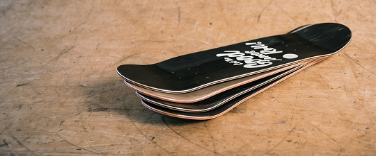
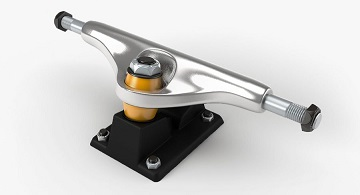
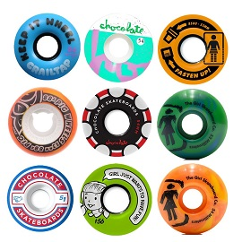

Board/Deck
The wooden part that you stand on is the first thing that comes to mind when you think about skateboarding. The average board costs only 30-50 dollars!
Size recommendations:
7.00" to 7.50" Narrow decks ideal for youth riders.
7.50" to 8.00" Medium deck width for teen or adult riders skating street terrain or doing more technical tricks.
8.00" to 8.50" Ideal for various street and transition terrain. Parks, pools, rails, stairs.
8.50" and up Wider decks great for transition skating, bigger street tricks, pools, or just cruising.
Trucks
Skateboard trucks are the metal T-shaped pieces that mount onto the underside of the skateboard and keep your skateboard wheels and bearings securely attached to the deck. They are a key component to creating your own skateboard, and can affect the way you ride your custom complete.
Skateboard trucks are composed of several different parts: axles, hangers, kingpins and bushings. All these parts impact your skateboard's performance and the type and size of skate trucks you choose – or that will fit your skateboard – directly affect your stability. Choosing and maintaining the right skateboard trucks is also key to avoiding wheel bite, which happens when your wheels rub against your board and cause you to stop on impact during a trick or turn.
Trucks can easily be adjusted to perform tighter turns or tricks on your board, but you can also choose softer bushings for easy turning, or hard bushings for stiff turning. How loose or tight you keep your trucks really depends on how you prefer to skate, but it all starts with choosing the right trucks and building the appropriate type of skateboard for your style.
Truck size is measured by axle width or hanger width. The width of the hanger and axle determines how far apart your wheels are. The width of your trucks will affect the performance of your board, since different truck widths are better suited for certain riding styles. The most common setup is for the truck axle to be approximately the same width as your deck – this setup offers the most stability. Generally speaking, go with an axle that is just greater or less than 1/4" the width of the board.
6"-7.25" truck axle - 6.5" to 7.25" skateboard decks
7.5" truck axle - 7.25 to 7.5" skateboard decks
7.75" truck axle - 7.5” to 8" skateboard decks
8.0" truck axle - 8” to 8.5" skateboard decks
8.5" truck axle - 8.5” to 9" skateboard decks
9.0" truck axle - 9” to 10” skateboard decks
10.0" truck axle - 10” wide and above skateboard decks
Wheels
Simply put, the skateboard wheels are the part of your skateboard that allow you to move, and help determine how fast you can go. Typically made of polyurethane, skateboard wheels come in a range of sizes, colors, and durability levels to suit your skateboard style and preference.
Skateboard wheels are measured by both diameter and durometer. Diameter is the size of the wheel, and durometer is the hardness of the wheel. Both of these factors are a matter of personal preference, and what you intend to do on your skateboard. Custom building allows you to choose what the best wheels are to match your deck, trucks, and hardware.
Skateboard wheel diameter is measured in millimeters (mm); most wheels range from 50-75 mm, and the lower the number, the smaller the wheel.
Wheel diameter also affects how quickly you accelerate and how tightly you can turn. Smaller wheels result in a slower ride, whereas larger wheels result in a faster one. And because they’re lower to the ground and typically easier to control, smaller wheels are ideal for technical or street skating. If you’re a beginner or someone who uses a skateboard as daily transportation, you’ll want to look into larger wheels instead. Their increased diameters offer speed and balance all in one, making them perfect for low-key cruising or vert skating.
Additionally, your height and weight can affect what size wheels feels right for you.
50-53mm Small, slower wheels; stable for trick riding and smaller riders skating street, skate parks, and bowls.
54-59mm Average wheel size for beginners and bigger riders skating street, skate parks, bowls, and vert ramps.
60mm + Specialty riders skating longboards, old-school boards, downhill, and dirt boards; made for speed and rougher surfaces.